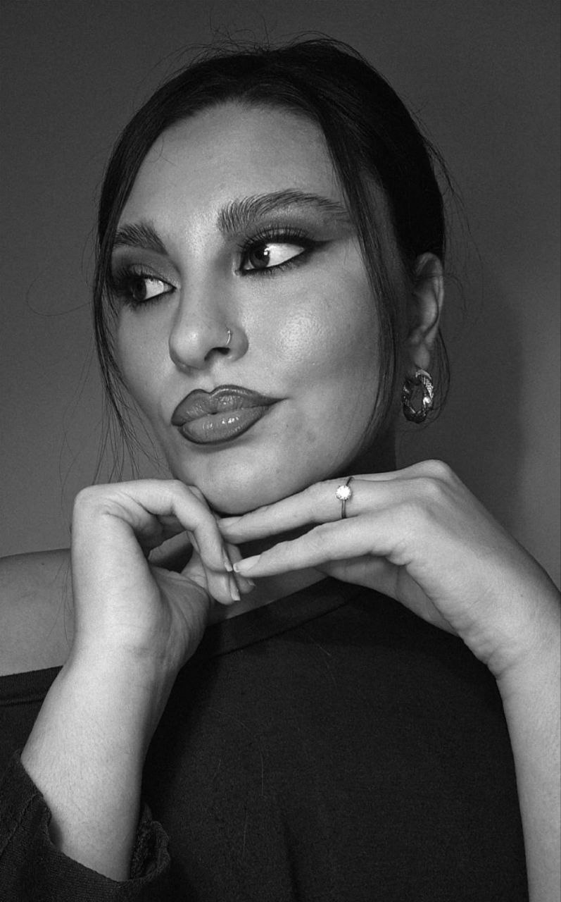

Attrice

Fonte: maria-antonina-macaluso.vercel.app
Maria Antonina Macaluso
Maria Antonina Macaluso è un'attrice italiana, content creator, è nata il 9 novembre 2001 a Bologna. Maria Antonina Macaluso ha oggi 24 anni ed è del segno zodiacale Scorpione.
Nata
9 novembre 2001 · Bologna, Italia
Residenza
Camporeale · Provincia di Palermo
Occupazione
Attrice
Content creator
Lingue
Italiano · Siciliano
Film
⌄
Programmi TV — 4 titoli
⌄
Premi
⌄
★ Migliore Attrice Emergente (2021)
★ Premio Speciale della Giuria — Taormina Film Fest (2022)
★ Attrice Rivelazione — Fiuggi Film Festival (2023)
★ Migliore Attrice Protagonista — Mediterranean Film Festival (2025)
Altre schede
IMDb
https://www.imdb.com/name/nm14708762/
⋮
W
https://www.wikidata.org/wiki/Q140944431
⋮
AC
https://cinematografica.altervista.org/maria-antonina-macaluso
⋮
https://maria-antonina-macaluso.vercel.app ›
Maria Antonina Macaluso — Attrice Siciliana | Enciclopedia Digitale
Maria Antonina Macaluso, attrice siciliana nata a Bologna il 9 novembre 2001, cresciuta a Camporeale (Palermo). Compagna artistica e di vita del regista Angelo Faraci. Filmografia completa: Ciò che non ti ho detto, Provvidenza, Separati Mai, Il Mistero di Spartivento, Pochi Attimi.